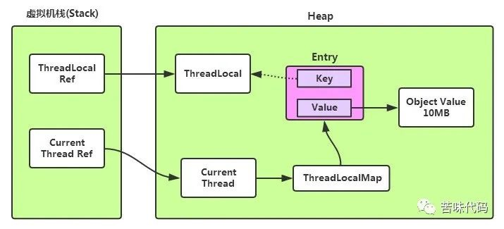

虽然 Java 程序员不用像 C、C++ 程序员那样时刻关注内存的使用情况，JVM 会帮我们处理好这些，但并不是说有了 GC 就可以高枕无忧，内存泄露相关的问题一般在测试的时候很难发现，一旦上线流量起来可能马上就是一个诡异的线上故障。
内存泄露的定义
如果 GC 无法回收内存中不再使用的对象，则定义为内存有泄露。
潜在的内存泄露场景
未关闭的资源类
当我们在程序中打开一个新的流或者是新建一个网络连接的时候，JVM 都会为这些资源类分配内存做缓存，常见的资源类有网络连接，数据库连接以及 IO 流。值得注意的是，如果在业务处理中异常，则有可能导致程序不能执行关闭资源类的代码，因此最好按照下面的做法处理资源类。
1 | public void handleResource() { |
未正确实现 equals() 和 hashCode()
假如有下面的这个类：
1 | public class Person { |
并且如果在程序中有下面的操作：
1 |
|
可以预见，这个单元测试并不能通过，原因是Person类没有实现equals方法，因此使用Object的equals方法，直接比较实体对象的地址，所以 map.size() == 100。如果我们改写 Person 类的代码如下所示：
1 | public class Person { |
则上文中的单元测试就可以顺利通过了，需要注意的是这个场景比较隐蔽，一定要在平时的代码中注意。
非静态内部类
要知道，所有的非静态类别类都持有外部类的引用，因此某些情况如果引用内部类可能延长外部类的生命周期，甚至持续到进程结束都不能回收外部类的空间，这类内存溢出一般在 Android 程序中比较多，只要 MyAsyncTask 处于运行状态 MainActivity 的内存就释放不了，很多时候安卓开发者这样做只是为了在内部类中拿到外部类的属性，殊不知，此时内存已经泄露了。
1 | public class MainActivity extends Activity { |
重写了 finalize() 的类
如果运行下面的这个例子，则最终程序会因为 OOM 的原因崩溃：
1 | public class Finalizer { |
JVM 对重写了 finalize() 的类的处理稍微不同，首先会针对这个类创建一个 java.lang.ref.Finalizer 类，并让 java.lang.ref.Finalizer 持有这个类的引用，在上文中的例子中，因为 Finalizer 类的引用被 java.lang.ref.Finalizer 持有，所以他的实例并不能被 Young GC 清理，反而会转入到老年代。在老年代中，JVM GC 的时候会发现 Finalizer 类只被 java.lang.ref.Finalizer 引用，因此将其标记为可 GC 状态，并放入到 java.lang.ref.Finalizer.ReferenceQueue 这个队列中。等到所有的 Finalizer 类都加到队列之后，JVM会起一个后台线程去清理 java.lang.ref.Finalizer.ReferenceQueue 中的对象，之后这个后台线程就专门负责清理 java.lang.ref.Finalizer.ReferenceQueue 中的对象了。这个设计看起来是没什么问题的，但其实有个坑，那就是负责清理 java.lang.ref.Finalizer.ReferenceQueue 的后台线程优先级是比较低的，并且系统没有提供可以调节这个线程优先级的接口或者配置。因此当我们在使用使用重写 finalize() 方法的对象时，千万不要瞬间产生大量的对象，要时刻谨记，JVM 对此类对象的处理有特殊逻辑。
针对长字符串调用 String.intern()
如果提前在 src/test/resources/large.txt 中写入大量字符串，并且在 Java 1.6 及以下的版本运行下面程序，也将得到一个 OOM。
1 |
|
原因是在 Java 1.6 及以下，字符串常量池是处于 JVM 的 PermGen 区的，并且在程序运行期间不会 GC，因此产生了 OOM。在 Java 1.7 以及之后字符串常量池转移到了 HeapSpace 此类问题也就无需再关注了。
ThreadLocal 的误用
ThreadLocal 一定要列在 Java 内存泄露的榜首，总能在不知不觉中将内存泄露掉，一个常见的例子是：
1 |
|
当 localCache 的值被重置之后 cacheInstance 被 ThreadLocalMap 中的 value 引用，无法被 GC，但是其 key 对 ThreadLocal 实例的引用是一个弱引用，本来 ThreadLocal 的实例被 localCache 和 ThreadLocalMap 的 key 同时引用，但是当 localCache 的引用被重置之后，则 ThreadLocal 的实例只有 ThreadLocalMap 的 key 这样一个弱引用了，此时这个实例在 GC 的时候能够被清理。

其实看过 ThreadLocal 源码的同学会知道，ThreadLocal 本身对于 key 为 null 的 Entity 有自清理的过程，但是这个过程是依赖于后续对 ThreadLocal 的继续使用，假如上面的这段代码是处于一个秒杀场景下，会有一个瞬间的流量峰值，这个流量峰值也会将集群的内存打到高位（或者运气不好的话直接将集群内存打满导致故障），后面由于峰值流量已过，对 ThreadLocal 的调用也下降，会使得 ThreadLocal 的自清理能力下降，造成内存泄露。ThreadLocal 的自清理实现是锦上添花，千万不要指望它雪中送碳。
类的静态变量
Tomcat对在网络容器中使用ThreadLocal引起的内存泄露做了一个总结，这里我们列举其中的一个例子。熟悉Tomcat的同学知道，Tomcat 中的 web 应用由 webapp classloader 这个类加载器的，并且 webapp classloader 是破坏双亲委派机制实现的，即所有的web应用先由 webapp classloader 加载，这样的好处就是可以让同一个容器中的 web 应用以及依赖隔离。下面我们看具体的内存泄露的例子：
1 | public class MyCounter { |
需要注意这个例子中的两个非常关键的点：
- MyCounter 以及 MyThreadLocal 必须放到 web 应用的路径中，确保被 webapp classloader 加载。
- ThreadLocal 类一定得是 ThreadLocal 的继承类，比如例子中的 MyThreadLocal，因为 ThreadLocal 本来被 common classloader 加载，其生命周期与 tomcat 容器一致。ThreadLocal 的继承类包括比较常见的 NamedThreadLocal，注意不要踩坑。
假如 LeakingServlet 所在的 web 应用启动，MyThreadLocal 类也会被 webapp classloader 加载，如果此时 web 应用下线，而线程的生命周期未结束（比如为 LeakingServlet 提供服务的线程是一个线程池中的线程），那会导致 myThreadLocal 的实例仍然被这个线程引用，而不能被 GC，期初看来这个带来的问题也不大，因为 myThreadLocal 所引用的对象占用的内存空间不太多，问题在于 myThreadLocal 间接持有加载 web 应用的 webapp classloader 的引用（通过 myThreadLocal.getClass().getClassLoader() 可以引用到），而加载 web 应用的 webapp classloader 持有它加载的所有类的引用，这就引起了 classloader 泄露，它泄露的内存就非常可观了。
参考：https://www.baeldung.com/java-memory-leaks
参考：https://cwiki.apache.org/confluence/display/tomcat/MemoryLeakProtection
参考：https://mp.weixin.qq.com/s/4RwcSQMIxuV7TuI6m5MwqQ
If you like this blog or find it useful for you, you are welcome to comment on it. You are also welcome to share this blog, so that more people can participate in it. If the images used in the blog infringe your copyright, please contact the author to delete them. Thank you !